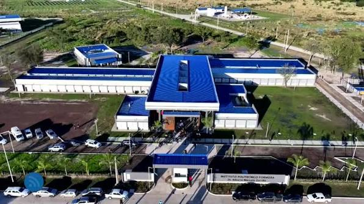
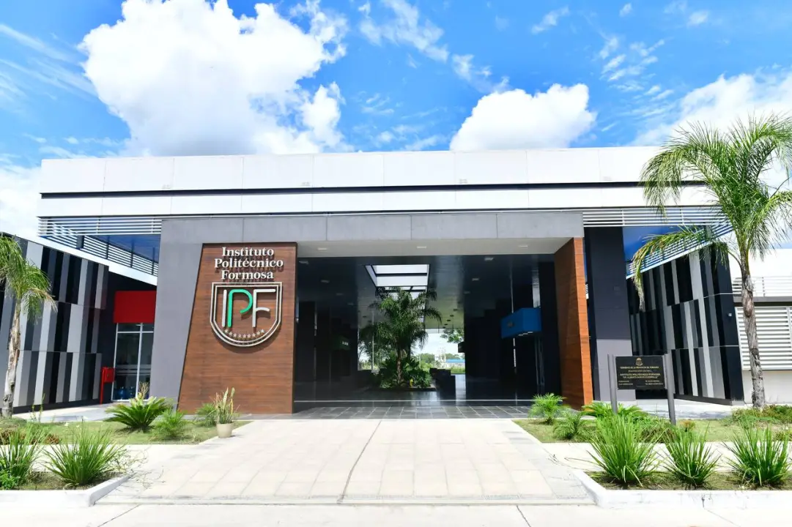
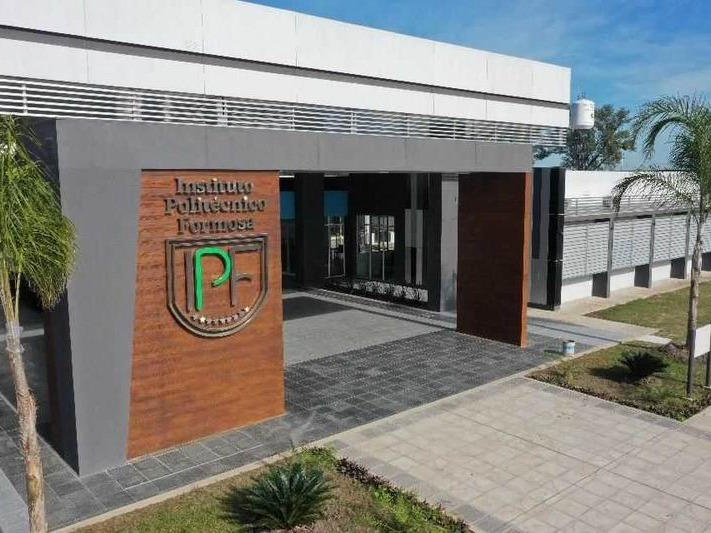

Bienvenidos al IPF
Educación técnica superior pública y gratuita para el desarrollo de Formosa.
Ver carreras
Nueva sede institucional
Instalaciones inauguradas en junio de 2025 sobre la Ruta Nac. 81, km 1190.
Conocer la institución
Formación con proyección regional
Técnicos preparados para integrar el Polo Científico, Tecnológico y de Innovación.
ContactanosBienvenidos al Instituto Politécnico Formosa
El Instituto Politécnico Formosa (IPF) es una institución educativa de avanzada, creada por decreto provincial N.º 18/2018, orientada a formar técnicos superiores que articulen el estudio con el trabajo, y la investigación con la producción. Funciona en su nueva sede sobre la Ruta Nacional N.º 81, km 1190, en la ciudad de Formosa, inaugurada en junio de 2025.
Ofrecemos educación pública y gratuita, con cuatro tecnicaturas superiores pensadas para acompañar el desarrollo científico, tecnológico y productivo de la provincia y la región.
Conocé nuestra historia
Por qué elegir el IPF
Educación gratuita
Formación técnica superior pública, sin costo de matrícula.
4 tecnicaturas
Química Industrial, Mecatrónica, Telecomunicaciones y Software.
Sede nueva
Instalaciones inauguradas en 2025, equipadas para la práctica.
Polo Científico
Articulación directa con el Polo Científico, Tecnológico y de Innovación.